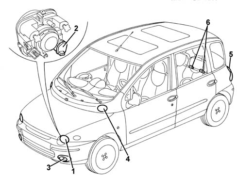

INTRODUCTION - EXTERIOR LIGHTING
- Path
- Descriptions > 55 ELECTRICAL EQUIPMENT > 5540 EXTERIOR LIGHTING > INTRODUCTION - EXTERIOR LIGHTING
- Kind
- system description
- Applies to
- all engines; production: fino a 05/99, da 09/03, da 06/99 a 03/02, da 04/02 a 08/03, fino a 05/04
- Interactive page
- https://sloeber94.github.io/elrnDB-fMltpl/en/#/2892453
Applies to: all engines; production: fino a 05/99, da 09/03, da 06/99 a 03/02, da 04/02 a 08/03, fino a 05/04
The vehicle's exterior lighting system has been designed with two aims in mind:
- ensuring maximum efficiency in terms of complying with international regulations which define the illumination specifications of the various components
- integration with the design of the vehicle so that the various components reflect the image.
In particular:
- the main beam headlamps are located high up and in a recessed position: this ensures a larger illuminated area and reduces "pitching" of the light beam.
- the dipped beams are in the "traditional" position.
- the front fog lamps are located in the bumper, in a very low position.
All these lamps are fitted with high efficiency halogen bulbs.
There is also an electrical device for adjusting the height of the light beam. The switch in the passenger compartment controls the actuators on the light clusters with four different settings which depend on the vehicle load.

1, Dipped beam headlamp
2, Headlamp adjustment motor
3, Fog light
4, Main beam headlamp
5. Rear light cluster
6, Number plate light